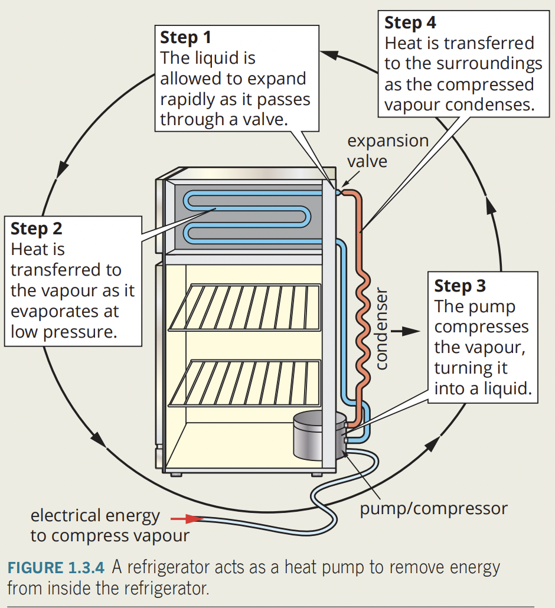
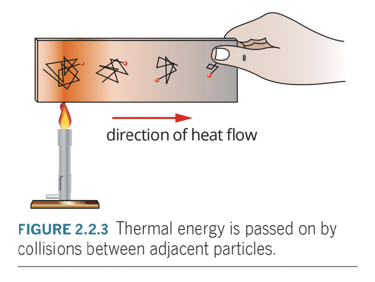

Science as a Human Endeavour:
- The development of heating technologies that use conduction, convection, radiation and latent heat have had, and continue to have, significant social, economic and environmental impacts. These technologies include:
passive solar design for heating and cooling of buildings
- passive heating reduces overall energy consumed within the building by taking advantage of natural climate to maintain a comfortable temperature indoors.
- insulation prevents loss by conduction in summer
- solid brick walls and concrete slab floors provide large thermal mass, which takes longer to heat up on hot days, and cool down on cold nights.
- large windows positioned on the northern sides
- allows solar energy to warm interior in winter.
- overhanging eaves/trees provide shade in summer.
- small windows to the south provide ventilation but reduce heat loss on the shady side of the house.
- double glazing with air trapped between two windows; air acts as insulator and prevents some heat from being conducted and also stops heat loss from the house.
- shading reduces amount of sunlight you receive.
-
- energy costs rise, resources dwindling -> need to reduce amount of fossil fuels used to provide energy for stuff.
- reduce energy through passive heating of a building through solar design.
- insulation prevents loss of conduction in winter and gain of heat by conduction in summer.
- conduction process of which heat energy is transmitted through collisions between neighbouring atoms/molecules.
- large windows on northern side of house allows solar energy to warm interior in winter. small windows in the south provide ventilation but reduce heat loss on the shady side of the house.
- overhanging eaves/deciduous trees provide shade in summer.
- blank walls heavily shaded by trees/overhangs avoid sun of hot summer and shield against prevailing winter wind.
- living areas on the northern side allows winter sun to warm areas of house where it is needed during the day, and rooms used little are sited on the southern side of the house.
- heavy curtains/double glazing reduce conductive heat loss at night and winter. also reduce solar energy gains in summer. conventional single glazing allows heat to be lost through conduction (?)
the development of the refrigerator over time
- refrigerators make things cold by removing energy from them.
- modern refrigeration systems are called ‘heat pumps’ because heat energy is pumped from space being cooled to outside air.
- 
- refrigerant circulated around a closed system of pipes by pump.
- refrigerators act as heat pumps transferring heat energy from target environment to the “exhaust” - eternal environment
- coolant (low boiling point liquid) circulated around a closed system of pipes by a pump.
- pressure inside evaporator pipes is reduced by an expansion valve, causing coolant to evaporate.
- evaporation requires energy for change of state, so system will absorb energy from the surrounding air, making the air cooler.
- in condenser pipes, the process is reversed, where the coolant/refrigerant gas is compressed and condenses to a liquid, which releases energy into surrounding air, so the air gets warmer.
the use of the sun for heating water
- solar cells make use of free sun energy, transforming radiant energy from sun into electrical energy.
- or you can use it to heat water.
- solar camp shower is black plastic container filled with water hung out in sunshine, as dark surfaces absorb more radiant energy than lighter surfaces, black plastic absorbs radiant energy from sun and is converted to thermal energy, which heats the water inside.
- solar collector panel is place on sunniest side of roof, and connected to water tank.
- active solar water heater use electrical pumps to move hot water around the system.
- passive rely on convection currents to move hot water
engine cooling systems in cars
- car is not efficient, and a lot of energy is released as thermal energy.
- to avoid overheating, cooling system exist.
- car has coolant circulating pipes around the engine, absorbing thermal energy generated.
- hot coolant is pumped away from engine, it removes thermal energy.
- hot coolant passes through heat exchanger called radiator, which is a series of narrow tubes with high surface area meaning more energy can be radiated.
- air from outside the car is moved across radiator by fan or airflow from moving car.
- air is blown across radiator, thermal energy is transferred from coolant to air.
Science Understanding:
the kinetic particle model describes matter as consisting of particles in constant motion, except at absolute zero
- all matter are made up of small particles, particles which are in constant motion, sometimes forming elastic collisions.
- always in motion, except in absolute zero.
all substances have internal energy due to the motion and separation of their particles
- internal energy refers to the total kinetic and potential energy of particles within substance.
- all substances have internal energy due to the motion and separation of their particles
- kinetic energy is the energy of movement.
- potential energy is the energy stored in the bonds between particles.
- kinetic particle model explain idea of heat as a transfer of energy.
- heat is the transfer of thermal energy from a hotter body to a cold one.
- thermal energy refers to the energy contained within a system responsible for its temperature.
- internal energy is the total kinetic energy and potential energy within a substance.
- heating is the process of transferring thermal energy.
- heating changes the internal energy of a substance by affecting the kinetic energy and/or potential energy of particles within the substance.
- energy is a measure of an object’s ability to do work
- e.g. raising an objects temperature is doing work.
- measured in joules (J)
- the internal energy of a system is defined as the kinetic and potential energy of the system.
- if heating results only in the change of state or expansion of object, and not a change in temperature, does the total internal energy increase?
- yes. potential energy increases, not the kinetic energy!
temperature is a measure of the average kinetic energy of particles in a system
- temperature is a measure of the average kinetic energy of particles in a system
provided a substance does not change state, its temperature change is proportional to the amount of energy added to or removed from the substance; the constant of proportionality describes the heat capacity of the substance
- This includes applying the relationship
- look through specificHeatCapacity and 1.2specificHeatCapacity
change of state involves separating particles which exert attractive forces on each other; latent heat is the energy required to be added to or removed from a system to change the state of the system This includes applying the relationship Q = m L
- L is the latent heat (unique for every substance)
- Latent heat: energy released/absorbed in the transformation of a state of matter, for a substance
- water’s latent heat for fusion (conversion between solid and liquid): 3.34×105 J kg−1
- water’s latent heat for vaporisation (conversion between liquid and gas) - For water: 2.26×106 J kg−1
VAPORISATION (liquid & gas) AND FUSION (solid & liquid) ARE DIFFERENT
two systems in contact transfer energy between particles so that eventually the systems reach the same temperature; that is, they are in thermal equilibrium. This may involve changes of state as well as changes in temperature
- funny property of heat
- Heat will transfer from a hotter object to a colder one until they reach the same temperature.
- the same temperature is NOT THE AVERAGE !!!!!! it depends on the MASS and SPECIFIC HEAT CAPACITY and ENERGY LOST/GAINED
- referring to the (specific heat capacity) and (latent heat)
a system with thermal energy has the capacity to do mechanical work [to apply a force over a distance]; when work is done, the internal energy of the system changes
- what is mechanical work?
- measure of the energy transferred by a force.
- heat transfer is not considered mechanical work, since there is no measurable force involved in the transfer.
- measured in joules (same as heat, and internal energy)
- mechanical work affect on internal energy:
- first law of thermodynamics:
- energy can neither be created or destroyed: energy simply changes from one form to another and the total energy in an isolated system remains constant.
- internal energy (U) (total internal kinetic and potential energy of the system) of system can be changed by heating or cooling, or by doing mechanical work on or by the system.
- if mechanical work is done on the system, internal energy rises and system will increase in temperature or change state by melting or boiling.
- if mechanical work is done by the system, internal energy decreases and system will decrease in temperature or change state by condensing or solidifying.
- first law of thermodynamics:
- mechanical energy to thermal energy.
- stirring water -> temperature rises.
- same amount of mechanical work () always produced exactly the same amount of heating.
- thermal energy to mechanical energy
- system with thermal energy has capacity to do mechanical work.
- meaning IT CAN APPLY A FORCE THAT MOVES SOMETHING
- through work, energy is transferred from one system to another.
- the system doing work will lose internal energy; the system on which work is done will gain internal energy
- thermal power stations use thermal energy to do work. uses fuel to heat water to steam under high pressure, performing mechanical work on steam turbines, driving electrical generators.
- through this process, power station convert heat energy into electrical energy by doing work using thermal energy!.
- system with thermal energy has capacity to do mechanical work.
because energy is conserved, the change in internal energy of a system is equal to the energy added by heating, or removed by cooling, plus the work done on or by the system
- because energy is conserved, the change in internal energy of a system is equal to the energy added by heating, or removed by cooling, plus the work done on or by the system
energy transfers and transformations in mechanical systems always result in some heat loss to the environment, so that the usable energy is reduced and the system cannot be 100 percent efficient This includes applying the relationship efficiency
- energy transformations are never perfect - theres always some energy lost.
- efficiency is percentage of energy that is effectively transformed by a system.
- the formula
heat transfer occurs between and within systems by conduction, convection and/or radiation
- heat transfer occurs between and within systems by conduction, convection and/or radiation
- conduction is the process where heat is transferred from one place to another without the net movement of particles.
- conduction takes place between materials that are in thermal contact.
- a person holding ice cube, where heat travels from hand to the ice is an example of conduction.
- all materials conduct heat to some extent, conduction is most significant in solids than liquids, but less significant for gasses
- a good heat conductor is not necessarily always a good electricity conductor.
- conduction happens in two ways: energy transfer through molecular or atomic collisions, energy transfer by free electron.
- energy transfer through molecular or atomic collision: since particles in a solid substance are constantly vibrating (kinetic particle model), and interacting with neighbouring particles, if one part of the material is heated, the particles in that region will vibrate more rapidly, and interactions with neighbouring particles pass kinetic energy throughout the system via bonds between particles
- 
- slow process, since mass of particles is relatively large and vibrational velocities are fairly low.
- materials where this method is only method of heat transfer are poor conductors of heat or even thermal insulators
- e.g. glass, wood, and paper
- energy transfer by free electron: some materials, particularly metals have electrons not directly involved in one particular chemical bond, thus is able to free to move throughout lattice of positive ions.
- if metal is heated, positive ions and free electrons within metal gain extra energy, where even a small gain in energy result in a large gain in velocity.
- free electron provides means heat can be transferred through whole material, making this method good thermal conductors.
- factors affecting it:
- nature of materials -> larger a materials thermal conductivity, more rapidly heat energy conducts
- temperature difference; greater -> faster rate of energy transfer
- thickness -> thicker materials require more collisions
- surface area -> surface area (relative to volume of system) increase number of particles involved in transfer process, increasing rate of conduction.
- =======================================
- convection is transfer of thermal energy within fluid from movement of hot areas from one place to another.
- convection involves mass movement of particles unlike conduction and radiation.
- as fluid is heated, particles within gain kinetic energy and push apart due to increase vibrations, causing density of heated fluid to decrease and heated fluid rises.
- colder fluid, slower moving particles (denser and heavier) falls movingj in taking place of warmer fluid
- forming a convection current

- rate of convection is affected by:
- temperature difference between heat source and convective fluid.
- the surface area exposed to the convective fluid
- in a container, placement is important in affecting effectiveness.
- forced convection: ducted heating air is heated and then blown into a room
- natural convection: fluid rises as it is heated
- =======================================
- radiation is a means of transfer of heat without movement of matter.
- short for electromagnetic radiation, includes visible, ultraviolet and infrared light.
- make up electromagnetic spectrum with other forms of light
- radiation travels at speed of light
- radiation upon hitting an object, will be partially reflected, partially transmitted and partially absorbed.
- absorbing radiation transfers thermal energy to the absorbing object and causes rise in temperature.
- holding a marshmallow by an open fire, you are using radiation to toast the marshmallow.
- radiation is emitted by all objects of temperature above absolute zero.
- wavelength and frequency of radiation depends on internal energy of the object.
- higher temperature of the object, higher frequency and shorter wavelength of radiation is emitted.
- all objects absorb and emit thermal energy by radiation.
- if object absorbs more thermal energy than it emits, its temperature will increase. if object emits more energy than it absorbs, temperature will decrease, no temperature change occurs, the object and its surroundings are in thermal equilibrium.
- factors affecting rate of emission and rate of absorption:
- surface area - larger surface area, higher rate of radiant transfer.
- temperature - greater difference between the temperature of emitting surface and surrounding objects temperature, greater rate of energy transfer.
- wavelength of incident radiation - matte black surfaces perfect absorbers of radiant energy at all wavelengths, reflective surfaces are good reflectors of all wavelengths.
- silvered surface of an emergency blanket reflects thermal energy back to the body, and retains radiant energy normally lost, good thermal insulation.
- surface colour and texture; matte black for cooling down faster since radiate energy as efficient as energy absorption.
- thermal imaging device detects radiation emitted by heat.
sources: Pearson and littleroot
additional: work, power and efficiency notes
- open system allows matter and energy in and out of the system.
- closed system allows energy but not matter.
- isolated system does not allow either energy nor matter.
- the difference between heat and work is that heat is the transfer of energy because of a difference in temperature and that work is change in energy when a force is applied over a distance
- a car’s mechanical system would not be 100% efficient because the burning of the fuels produces heat leaving system and enters surroundings.
- when a system does work on some thing, the system loses energy to surroundings on the thing.